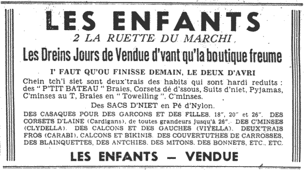
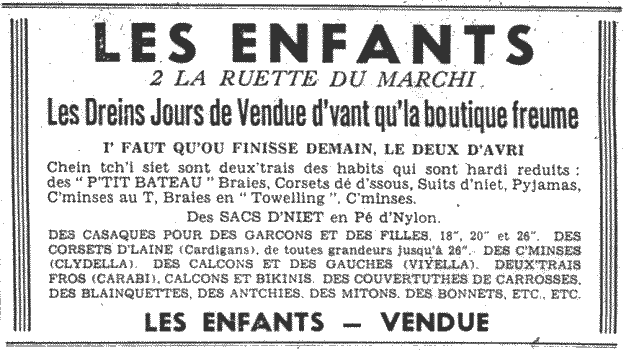

|
 |
 |
 |
 |
|
des drâses |
knickers |
|
la bague |
ring |
|
la bague dé fianchailles, la bague d'engagement |
engagement ring |
|
la bague dé neuches |
wedding ring |
|
la bav'thette |
bib |
|
la bliouque |
bow |
|
la bliouque |
buckle |
|
la blouse, la c'mînsole dé molleton |
smock |
|
la botte |
boot |
|
les bottes à cliou |
hobnailed boots |
|
la boucl'ye dé bouton |
nipple ring |
|
la boucl'ye d'ouothelle |
earring |
|
la boutonniéthe |
button-hole |
|
la brâssiéthe |
bra |
|
la câsaque |
coat |
|
la câsaque à coue d'héthonde |
tail coat |
|
la castchette |
cap |
|
la chaussette |
sock |
|
la cheintuthe |
belt |
|
la c'mînse |
shirt |
|
la c'mînsole |
nightie |
|
la c'mînsole |
nightshirt |
|
la cotelle, lé cotillon |
skirt |
|
la cravate |
tie |
|
la dgèrtchiéthe |
garter |
|
la grand' câsaque, la cache-mînséthe |
overcoat |
|
la manche |
sleeve |
|
la mitaine, lé miton |
mitten |
|
la pouchette, la paûte |
|
|
la robe |
robes |
|
la robe, lé fro |
dress |
|
la s'melle (du soulié) |
sole of shoe |
|
la teunette |
peaked cap |
|
la teunique |
tunic |
|
lé bannète |
bonnet |
|
lé bikini |
bikini |
|
lé blianchet |
cardigan |
|
lé bouton |
button |
|
lé brâcelet |
bracelet |
|
lé caûchement |
footwear |
|
lé chabot |
clog |
|
lé chapé |
hat |
|
lé chapé gorneux |
floppy hat |
|
lé chîngnon |
bun |
|
lé cliôque, lé manté |
cloak |
|
lé collet |
collar |
|
lé colyi |
necklace |
|
lé cordéré |
corduroy |
|
lé corset d'oeuvre, lé blianchet d'oeuvre |
jersey |
|
lé d'mié-bas |
bowler-hat |
|
lé fa, lé suit |
suit |
|
lé flianné |
flannel |
|
lé jèrtchîn |
jerkin |
|
lé riban |
ribbon |
|
lé riboule |
wooden clog |
|
lé soulié, soulier |
shoe |
|
lé sweatshirt |
sweatshirt |
|
lé toppeur, lé bill-toppeur |
top hat |
|
lé t-corset |
t-shirt |
|
l'êcharpe, lé mouoché |
scarf |
|
l'empiègne d'un soulié |
uppers of shoe |
|
les boxeurs |
boxer shorts |
|
les cauches |
stockings |
|
les drâses, braies, p'tites braies |
pants |
|
les gants |
gloves |
|
les guélesses |
braces |
|
les habits, les hardes |
clothes |
|
les hautes bottes |
wellington boots |
|
les jeans |
jeans |
|
les leunettes |
spectacles |
|
les pantoufl'yes, les chapîns, les patîns, les scarpîns |
slippers |
|
les pyjamas |
pyjamas |
|
les traîneurs |
trainers |
|
l'êtui à leunettes |
spectacle-case |
|
l'noeud papillote |
bow tie |
|
l'ouôlet, l'ouôlîn |
hem |
|
l's habits dé d'ssous, lé lînge dé corps, lé lînge dé d'ssous |
underwear |
|
l'unniforme |
uniform |
|
l'unniforme d'êcole |
school uniform |
|
l'veste |
waistcoat |
 
 


Viyiz étout: